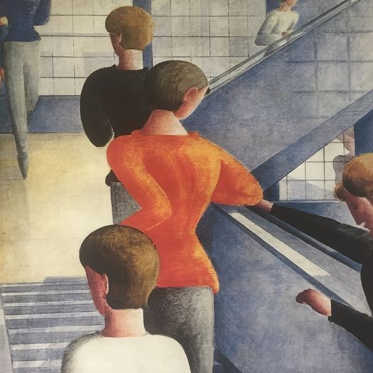

Biology and TOK
Shared by Max Wang from Waiacademy.
由 Waiacademy 的 Max Wang 分享。
Oskar Schlemmer
Oskar Schlemmer (1888-1943) was a German painter, sculptor and performer. During the 1920s, he taught at the Bauhaus school, an avant-garde German art academy that combined fine arts with principles of mass production and function. Schlemmer was pioneer within the Bauhaus as someone who bridged abstract and representational art as well as traditional performance with modern art.
In his paintings, Schlemmer explored abstract forms with the human body; retaining the underlying human structure while depicting people as almost architectural constructs, in paintings such as the Bauhaus Stairway. In performances, Schlemmer similarly ought to modernize traditional art forms with pieces like his Triadic Ballet, where dancers adorned geometric, faceless costumes and performed to emphasize their forms and movements without a central narrative.
Shared by Jessica Cai from the Art Appreciation Club.
由 Art Appreciation Club 的 Jessica Cai 分享。
Why Not Ask Again: The Shanghai Biennials
何不再问：第十一届上海双年展
The protagonist in our exhibition finds love hiding in plain sight. She undertakes intensely personal forays into the noise and bleeds of archives, and stares at suspended helicopters. She hangs her washing on a fighter plane, and watches oil slicks stain the earth with her eyes wide shut. She listens to fossils and stumbles onto ghosts in corridors, mulling over stubbornness, cutting short journeys, decoding mishaps, planting rice, cleaning up after explosions. She finds herself investigating a black hole in the back street of a small town and the trough of a panorama hollowed out of a landscape in the wake of a mine. She refuses to accept simple answers.
Where does this place our sense of the centre of the contemporary world-question? As in, what is our sense of the contemporary world that has lost its centre?
Questions exist because answers do not end a conversation. The questioning of what it means to simply "be" exists because we can never be satisfied by the mere assertion of being. Every desire is a question and a tussle between what we are, and what we can become. So let us ask again, Why Not Ask Again.